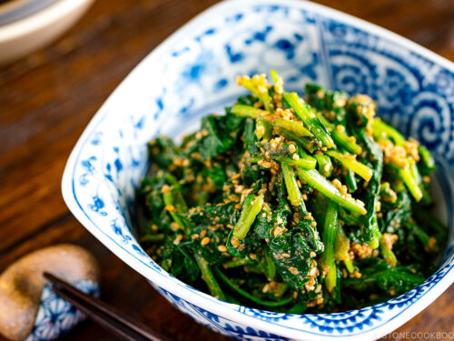

goma-ae

Boiled spinach with sesame sauce.
ingredients
- 1 bunch of spinach,
- 3 tbsp sesame seeds,
- 1.5 tbsp soy sauce,
- 1.5 tbsp sugar,
- 1 tbsp sake.
instructions
- Boil spinach for 1 minute, drain and cool.
- Squeeze out excess water and cut into 2-inch pieces.
- Toast sesame seeds and grind them.
- Mix the ground sesame seeds, sugar, soy sauce, and sake
to make the sauce.
- Toss spinach in the sauce before serving.